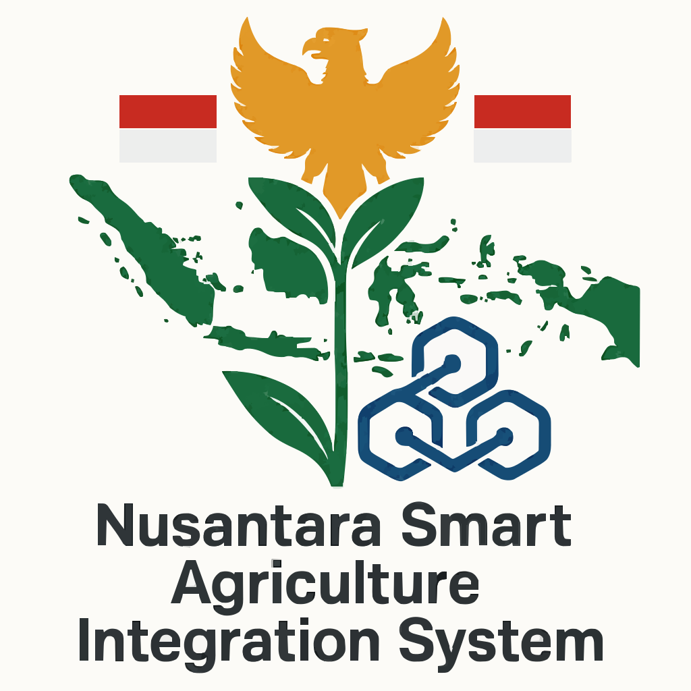
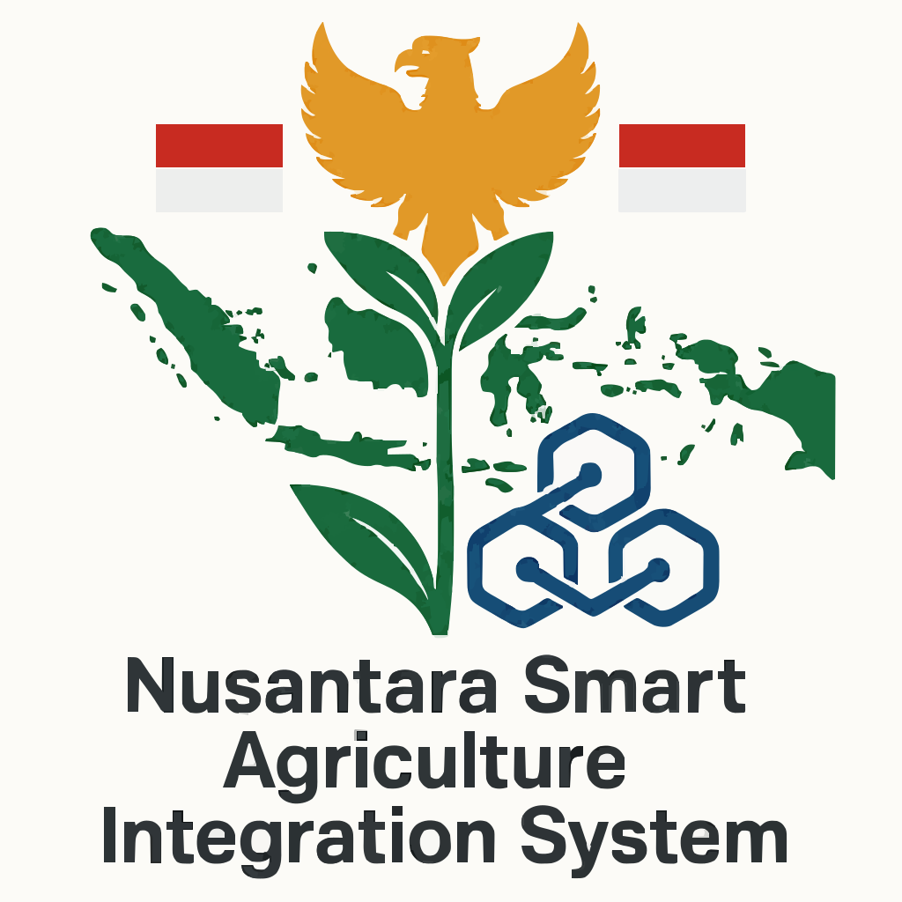
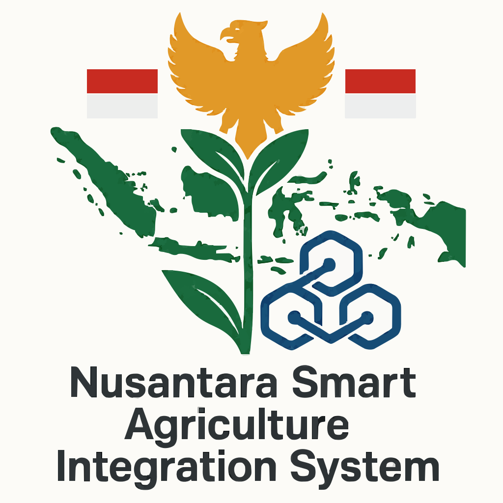

🌾 Nusantara Smart Agriculture Integration System 🌾

‹
›
📍 Pemetaan & Topografi
🌦️ Pemantauan Cuaca & Iklim
💧 Otomatisasi Irigasi
🌱 Pendataan Bibit & Pemantauan
💧 Otomatisasi Irigasi
Kode Lokasi Pertanian:
Nomor Blok Lokasi:
Nomor Pintu Irigasi:
Hari Pengairan:
Senin
Selasa
Rabu
Kamis
Jumat
Sabtu
Minggu
Jam Mulai:
Jam Selesai:
Debit Air/Periode (liter):
Simpan & Set Otomatisasi
 
